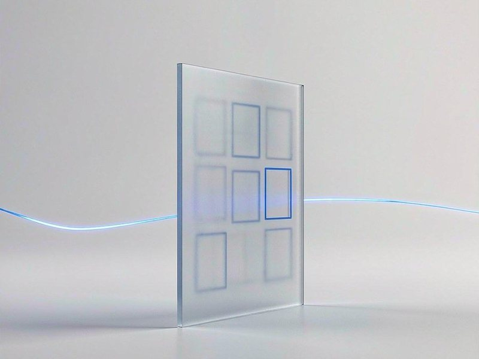
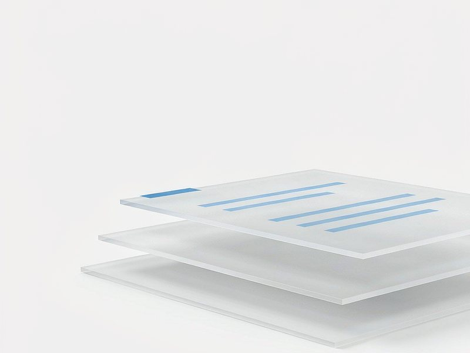
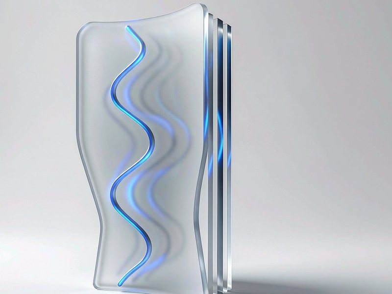
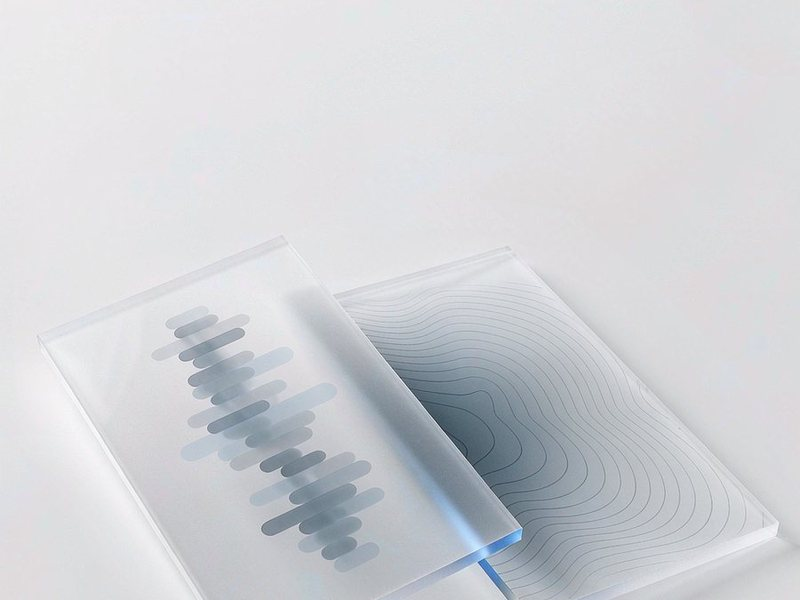

About the Lab
让机器同时理解文字、图像与声音
多模态数据处理实验室（Lab for Multimodal Data Processing，LMDP）依托合肥师范学院 计算机与人工智能学院，围绕图像、文本与语音的联合理解开展研究。
我们关心三个更慢但更重要的问题：多模态数据如何被准确表示、如何在语义层面真正对齐、 以及在没有大规模标注的条件下如何依然可用。实验室坚持「论文里的方法要能跑起来」—— 每个方向都配有可复现的实验与可交付的代码。
科学研究
五个方向围绕同一条主线：数据如何被表示、如何被对齐、如何在真实场景里用起来。

计算机视觉
从网格到区域
视觉显著性、区域级表示与图像描述。SMART（TMM 2026）用自适应区域特征替代固定网格，缓解语义碎片化。
了解研究内容 →图文匹配
让图文对上
区域—短语级的细粒度对齐，以及跨模态检索中的负样本构造与难例挖掘。
了解研究内容 →
文本识别
为语义提供入口
场景文字检测与识别、文档结构理解，处理透视畸变、低对比度与多语言混排。
了解研究内容 →
语音识别
在噪声里听清
中文语音识别与噪声条件下的鲁棒性，关注低资源场景的模型适配与数据增广。
了解研究内容 →
视听语音增强
看口型，补声音
用唇动等视觉线索辅助语音分离，在强噪声下恢复可懂度。与 Amir Hussain 教授团队合作。
了解研究内容 →国际合作
把合作做实
与英国斯特灵大学 Amir Hussain 教授团队联合开展视听语音增强研究，目前有两名研究生参与。
了解研究内容 →新闻和学术活动
实验室成员参加 2026 人工智能前沿学术会议
中国科学院院士赵政国作大会报告，参会成员就多模态理解与视觉语言模型进展与同行交流。
论文 SMART 被 IEEE TMM 接收
提出语义合并的自适应区域 Transformer，缓解网格特征导致的语义碎片化，用于图像描述生成。
参加中国工业计算机大会暨第二十三届学术年会
大会由 CCF 主办，浙江大学赵永望教授报告《人工智能时代的工业软件开发：自动化与高安全合规》。
2026 版《入组须知》发布
更新了计算资源、组会制度、实验室管理与论文写作规范，新入组同学请先通读。